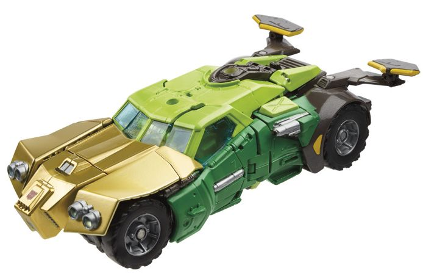
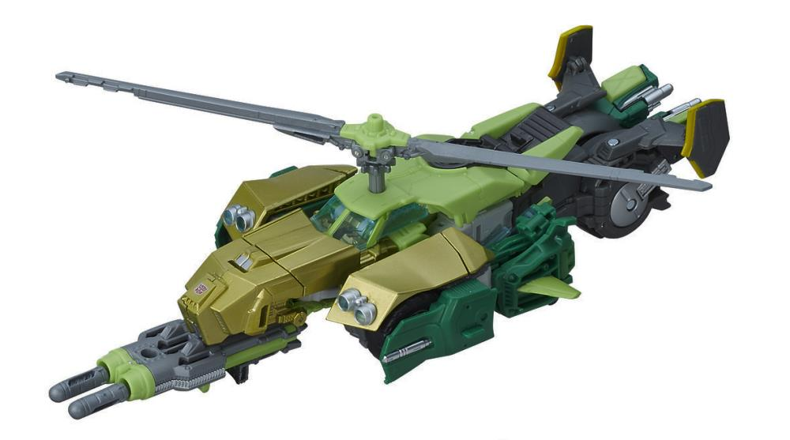

Size : Deluxe
Difficulty of Transformation : Medium
Color Scheme : White, light pink, and some black, transparent light blue, gray, metallic dull pink, red, and light blue
Individual Rating : 7.5
Allegiances
: Autobot
Set Price
: $150 (U.S.)
(NOTE: Because this set is composed of repaints,
this is not a full-blown review. This mainly covers any changes made to
the set and the color scheme, and merely compares it to the original versions
of these molds. For a review on the mass-release "Thrilling 30th" Arcee,
go
here
. For a review on the mass-release Generations
Blurr, go
here
. For a review on the mass-release
Generations Sergeant Kup, go
here
. For a review
on the mass-release "Thrilling 30th" Springer, go
here
.
For a review on the mass-release "Combiner Wars" Ultra Magnus, go
here
.)
 Arcee
Arcee
Size
: Deluxe
Difficulty of Transformation
: Medium
Color Scheme
: White, light pink,
and some black, transparent light blue, gray, metallic dull pink, red,
and light blue
Individual Rating
: 7.5
This version of Arcee
is a bit more lighter-toned than her mass-release version, with considerably
more white on her, particularly in vehicle mode. A larger section of the
top of the hood is white, along with white stripes down the sides, and
her rear section in vehicle mode is almost all white except for two metallic
dull pink stripes down the back end. She has two different shades of pink,
actually; there's a light pink that's a bit lighter and paler than on her
mass release version, and which is used for most of the front of her car
mode, as well as parts of her robot arms and chest. Although I'm not normally
a fan of pink, I think the darker metallic pink looks pretty good, but
is unfortunately pretty much only used on the back end of her vehicle mode
and on a few small paint apps on her robot mode, like on her "belt" and
the sides of her thighs. His swords are a lighter transparent blue this
time around, but still in the same ballpark as those on the original release.
She has some light blue paint as well, on her headlights, eyes, and a bit
on the middle of her body as well. A bit of gray is used here and there,
like on her seats as well as on her stomach, the sides of her head, and
her ankles. Black is still used, but only on the wheels. Finally, there's
just a titch of red paint, used on her stomach and on her lips. All in
all I think it makes for a more varied robot mode, but the original's vehicle
mode looked better (and more accurate) with more pink on it compared to
all the white.
No mold changes have
been made to this version of Arcee.
 Blurr
Blurr
Size
: Deluxe
Difficulty of Transformation
: Medium
Color Scheme
: Light sky blue, very
light chalky blue, dark blue, and some black, metallic blue, clear plastic,
orangish "cheesy" yellow, red, light gray, and chalky off-white
Individual Rating
: 9.7
Blurr's color scheme
is a bit more "G1-y" than his original Generations version, in vehicle
mode in particular. You've got those two triangular "swoops" on the sides
of the car mode that mimic the front of his more alien
G1
alt mode
. The light sky blue and dark blue plastic are still present
and mostly in the same place as on the original, though the dark blue in
this version is a bit darker than on the initial toy. The dark blue on
the bottom vehicle rim is now used less, but his wheels are now that dark
blue as well. There's some black used for his headlights and front grill,
as well as his rear windows-- it's a decent accent color, but black is
an odd color for headlights. Another big change to his vehicle mode is
that the roof bits made out of clear plastic have a really nice metallic
blue shade to them which really catches the eye; there's also two white
stripes coming down the back of his car mode (excepting the windows) and
covering his spoiler as well, a nice color upgrade. The clear plastic is
now a more straightforward plain clear color, which doesn't look as good
as the tinted plastic IMO, especially since you can see the details inside
his robot chest easier now, which is just flat. That said, the very light
blue paint on the four round details on said chest is a nice additional
touch; light blue has also been added to two small circles on the bottom
rear end of his car mode, and to his face, though oddly there's a "band"
of regular plastic between Blurr's mouth and his light blue eyes, which
just looks weird, like he's wearing a mask or something. The little bit
coming out of the top of his head is painted black, though, with a little
bit of orangish yellow at the opening of that bit on the front. The bits
of red and yellow are in their previous places on his knees and pelvis,
though his shoulders in robot mode are now unpainted. His weapons are light
gray instead of black now; that's a bit of a color downgrade, in my opinion.
Overall, though, this color scheme is more-or-less on par with the original,
it's just a bit more directly G1-inspired.
No mold changes have
been made to this version of Blurr.
 Kup
(Sergeant)
Kup
(Sergeant)
Size
: Deluxe
Difficulty of Transformation
: Medium
Color Scheme
: Greenish blue, black,
light pale teal, and some light teal, clear plastic, orangish "cheesy"
yellow, and silver
Individual Rating
: 8.8
Like most of the other
toys in this set, Kup is painted to be a bit more accurate to his G1 self--
even in alt mode, where it's clear he's got an "updated" vehicle. The shade
of greenish blue plastic used for this version is noticeably lighter than
that used on the mass release version, for one. Instead of light gray for
many of his smaller robot parts like the upper legs and upper arms, instead
this version has a light pale teal plastic there, along with some black
plastic on places like the wheels and gun. As for smaller deco changes,
in vehicle mode the rims are now black as opposed to a dark gray, and the
grill now has light teal paint around it, as opposed to just being a solid
silver like on the mass release. The wheel hubs are now painted light teal,
and his gas cap and some small ridged details in truck mode are painted
silver, to boot. In robot mode, the face is now a more accurate light teal,
as opposed to the silver of the original. The feet, details on the knees,
and paint apps on the abs and middle chest are now light teal as well.
There's also a bit more black, on some minor connector parts on the arms
as well as on the upper feet and waist, around the "belt" area. The light
orange paint apps are still present, but with more of a yellowish tint
this time around. The transparent plastic is pretty much the same color
on this version as on the mass release. Overall the look is slightly more
"crisp" and cartoony than his original version, but it's not a huge difference.
No mold changes have
been made to this version of Kup, though unfortunately most have the same
assembly error as
Botcon 2013 Hoist
.
 Springer
Springer


Size
: Voyager
Difficulty of Transformation from Car
to Helicopter
: Medium
Difficulty of Transformation from Car
to Robot
: Hard
Color Scheme
: Very light green,
dark bluish green, dark gray, metallic gold, and some very light gray,
light brownish gray, silver, black, transparent light blue, and orangish
"cheesy" yellow
Individual Rating
: 9.8
Springer is the most
radically different from his mass-release version when compared to the
other toys in this set. The light green from the original has been replaced
with an even lighter, rather lime green shade of plastic, which really
pops against the darker bluish-green plastic used mostly on the sides of
his vehicle mode and on his arms in robot mode. This nice color combination
is made even better by having the yellow on the original replaced with
a sublime shade of metallic gold, really giving this toy a "premium" look.
There's still some gray on the toy, but it's used a bit less; the dark
gray is mostly used on the shoulders and the back end of the vehicle modes/lower
legs. There's also a very light, almost "off-white" shade of gray used
for the upper legs, and a light gray used for the weapons. The transparent
plastic is pretty much the same shade of light blue as on the original,
and black is used in pretty much the same places (like the tires) as well,
though it's also been painted on the rear center section of the vehicle
modes. Silver paint is largely used in the same places this time around
too, as well as around the headlights and on the wheel hubs (in a more
realistic turn from the green wheel hubs on the original). Finally, the
yellow-orange paint apps are used on the same places in robot mode (though
it's more orange on this version compared to the original). However, there's
been some added in front of the rear wheels and on the tailfins of the
helicopter mode. There's also a few extra minor paint apps of different
colors here and there, like some silver on the rear sides of the car mode;
dark green on the smaller gold chest pieces; and dark green replacing the
silver on the robot waist.
No mold changes have
been made to this version of Springer.
 Ultra
Magnus w/ Minimus Ambus
Ultra
Magnus w/ Minimus Ambus
Size
: Leader
Difficulty of Transformation
: Hard
Color Scheme
: White, moderately
dark blue, metallic dark blue, milky red, and some black, silver, light
pea green, dark forest green, very light blue, and yellow
Individual Ratings
: 9.4 (Magnus);
6.8 (Ambus)
Out of all the toys in
this set, Ultra Magnus & Minimus Ambus have the color layouts closest
to their original releases. Compared to the original, Minimus Ambus' green
is a bit darker on this version, and he's got some more dark and light
green details painted on his chest, along with crisper paint details overall--
it's definitely a bit of an upgrade from his mass-release version. Ultra
Magnus' red is pretty much the same as on the original, though his blue
and white plastic colors are slightly different-- they're a bit closer
to a "pure" white and blue, rather than being as milky as on the original
release. Most of the paint apps are the same, though there are a few changes.
In vehicle mode, instead of there being a silver stripe along the cab,
it's now a blue stripe; additionally, a portion of the inner portion of
the cab that was white in the original is now blue here. In robot mode
the paint apps are almost entirely the same too, though with the addition
of a really nice metallic blue paint used for Magnus' lower arms and chest,
and with the waist now mostly painted metallic blue instead of just being
white. So he still looks like the same toy, just with a shinier (and thus
slighty better) paint job.
No mold changes have
been made to either Ultra Magnus or Minimus Ambus.
The "Autobot Heroes"
set is a big one, and a big purchase. At the time, $150 U.S. was a decent
bit more than these toys cost individually, though quite honestly the price
increase isn't nearly as bad as on most other "Platinum Edition" sets.
Basically, if you want a lot of the major players in the '86 movie cast,
and you don't have any of these toys (or maybe just 1 of them), this is
a recommended buy, as all of these molds are fantastic except for Arcee
(who's still okay, just not great). However, with the exception of Springer,
the toys aren't different enough from the mass-release versions to warrant
another purchase if you've already got them. If you have to choose between
the two versions of all of these releases though, I'd go with the Platinum
Edition set, even with the increased price, as the colors are just better
and all the extra paint apps look great.
Reviews by Beastbot
(Pics from Hasbro .)